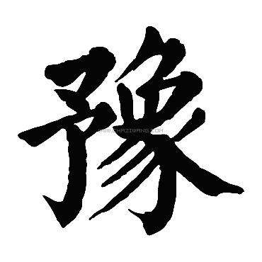

见河南，大美确山
确山铁花
起源于北宋，鼎盛于明、清，至今已有千余年的历史。最早的确山打铁花活动，充满道教的色彩和行业的特征。“打铁花”的最初目的一是为了展示本行业的气派，取悦于群众，扩大影响，等于做一次广 告。二是讨个吉利，利用“花”与“发”的谐音，取“打花打花，越打越发”之意，象征着事业发达兴旺。
确山方言
确山处在北方方言区内。由于交通便利，群众之间交际频繁，其方言与周围各县差异不太大。主要特点是四个声调，没有入声，有20个声母，41个韵母，声母中没有舌尖后声母。但是，这些声母仅在语流中时而出现，规律性不强，主要表现在儿化时，声母往往变成舌尖后音。